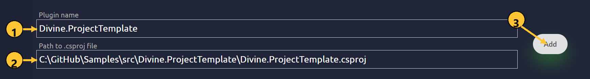
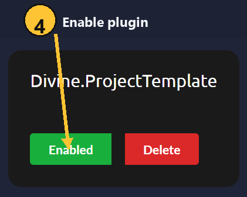

Getting Started
Local plugins
Follow these steps to create, add, build, and reload a local Divine plugin.
Step 1. Install the required tools
Install the required development tools:
- .NET 10 SDK
- Visual Studio 2022 or Visual Studio 2026 with a .NET development workload, or JetBrains Rider
Step 2. Create a plugin project
Use the sample plugin project template from GitHub:
Clone the repository and open the solution or project .csproj in Visual Studio or Rider.
Step 3. Check the project files
The project must include a global.json file:
{
"sdk": {
"version": "10.0.300",
"rollForward": "disable"
},
"msbuild-sdks": {
"Divine.Sdk": "1.3.5"
}
}
The plugin .csproj file must use Divine.Sdk:
<Project Sdk="Divine.Sdk" />
Step 4. Add the plugin in Divine
Open the local plugins page:
https://divine.wtf/local-plugins
Fill in the form:
Plugin name: the plugin name shown in the local plugins list.Path to .csproj file: the full path to the plugin.csprojfile.

Click Add.
Step 5. Enable the plugin
After the plugin is added, it appears in the local plugins list.
Click the plugin status button so it shows Enabled.

Step 6. Build the plugin
Build the plugin project in Visual Studio or Rider.
Wait until the build finishes successfully.
Step 7. Reload the plugin in game
After the build succeeds, go back to the game and press F5 to reload local plugins.
If the plugin is enabled and the build output is valid, Divine loads the updated plugin build.